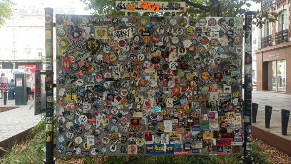
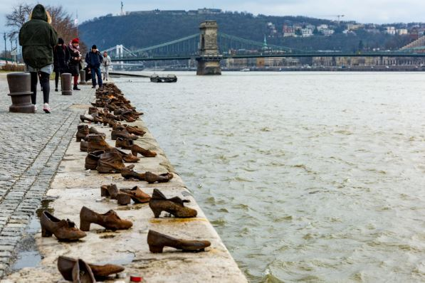

Le pochoir consiste à découper une forme, un motif ou un dessin dans une feuille rigide, puis à appliquer de la peinture à travers les zones découpées pour créer l’image sur un support. C’est une technique populaire chez les street artistes car elle permet d’obtenir des formes nettes, répétables et de travailler rapidement, souvent en évitant d’y passer trop de temps sur place.
Banksy est probablement le plus connu, utilise beaucoup le pochoir pour ses œuvres. Blek le Rat est le pionnier français du pochoir et Miss.Tic est autre figure importante du pochoir poétique et féministe.
Les mosaïques sont des œuvres réalisées en assemblant de petits éléments appelés tesselles, faits de pierre, de verre ou de céramique. Elles sont utilisées depuis l’Antiquité pour orner les sols, les murs et les plafonds, souvent avec des motifs artistiques ou symboliques et repris récemment avec des street artistes comme invader.
La technique du graffiti est l’une des formes les plus emblématiques du street art. Elle repose sur l’art de transformer des lettres en formes graphiques fortes, dynamiques et colorées. Pourquoi le graffiti est-elle l’une des forme les plus importante du street art parce que le graffiti, à l’origine, c’est l’écriture stylisée du nom de l'artiste avant d’être une fresque figurative. Le lettrage représente une identité,une signature et un style personnel.
Projection numérique d'une image manipulée par un ordinateur sur une surface par l'intermédiaire d'un système de lumière et de projection. Par exemple, cette technique est utilisée lors de la fête des lumières dans la ville de Lyon. C'est une technique plus institutionnelle qui est souvent commandée par la ville.
Le Sticker Bombing consiste à recouvrir un espace urbain (panneaux, poteaux, boîtes électriques, arrêts de bus…) d’autocollants . Cette technique met en avant généralement un message ou une image de propagande dans des lieux publics en utilisant des autocollants faits maison. Ces types d'autocollants mettent généralement en avant un programme ou un message politique.
Alors que d'autres sortes de graffitis peuvent être expressives, décoratives, socio-politiques, publicitaires ou de vandalisme, le yarn bombin ou le tricot urbain est presque exclusivement lié à l'embellissement et à la créativité. Il s'agit d'étalages colorés d'étoffes tricotées ou crochetées plutôt que de peinture ou de craie.
L'installation de rue est une tendance croissante au sein du mouvement de l'art urbain. Alors que le Street Art conventionnel et les graffitis sont réalisés sur des surfaces et des murs, l'installation de rue utilise des objets et un espace en 3D pour interférer avec le cadre urbain.
